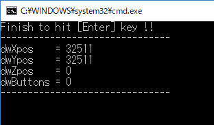

ジョイパッドによる操作を行えるようにすることを目的に、Win32 api の joyGetPosEx 関数を使う方法を以下にまとめます。
[概要]
joyGetPosEx 関数を使って、まずはジョイスティックの操作を読めるようにプログラムを動かしてみます。
ジョイスティックを検出して、上下左右、各種ボタンの押下状態、をコンソールへ出力するプログラムを作成してみます。
以下の４つの要素として情報を取得できます。
- wXpos : 無操作状態で 32511 を表示しました。
- wYpos
: 無操作状態で 32511 を表示しました。
- wZpos : Zpos
を変更できる入力装置がないためか、今回のテストでは常に０でした。
- wButtons : 無操作状態で 0、各ボタン押下により対応するビットが 1
になるようです。
[環境]

["stdafx.h"]
#pragma once #define WINVER 0x0601 // Windows7 をミニマム動作対象とする #define _WIN32_WINNT 0x0601 // Windows7 をミニマム動作対象とする #include "targetver.h" #include <stdio.h> #include <tchar.h> // TODO: プログラムに必要な追加ヘッダーをここで参照してください #include <Windows.h> #include <mmsystem.h> // joyGetPosEx, JOYINFOEX, JOYSTICKID1 #include <iostream> // cout, endl #include <string>
["testJoyGetPos.cpp"]
#include "stdafx.h"
#pragma comment(lib, "winmm.lib")
using namespace std;
namespace console {
// カーソル位置指定 for Windows Console
void setCursorPos(int x, int y)
{
HANDLE hConsole = GetStdHandle(STD_OUTPUT_HANDLE);
COORD pos;
pos.X = x;
pos.Y = y;
SetConsoleCursorPosition(hConsole, pos);
}
// カーソル位置取得
void getCursorPos(int& x, int&y) {
HANDLE hConsole = GetStdHandle(STD_OUTPUT_HANDLE);
CONSOLE_SCREEN_BUFFER_INFO consoleScreenBufferInfo;
GetConsoleScreenBufferInfo(hConsole, &consoleScreenBufferInfo);
x = consoleScreenBufferInfo.dwCursorPosition.X;
y = consoleScreenBufferInfo.dwCursorPosition.Y;
}
// カーソル表示状態取得
bool getConsoleCursorVisible() {
HANDLE hConsole = GetStdHandle(STD_OUTPUT_HANDLE);
CONSOLE_CURSOR_INFO consoleCursorInfo;
GetConsoleCursorInfo(hConsole, &consoleCursorInfo);
return consoleCursorInfo.bVisible;
}
// カーソル表示状態設定
void setConsoleCursorVisible(bool bVisible)
{
HANDLE hConsole = GetStdHandle(STD_OUTPUT_HANDLE);
CONSOLE_CURSOR_INFO consoleCursorInfo;
GetConsoleCursorInfo(hConsole, &consoleCursorInfo);
consoleCursorInfo.bVisible = bVisible;
SetConsoleCursorInfo(hConsole, &consoleCursorInfo);
}
} // console
int main()
{
JOYINFOEX joyInfoEx; // ジョイスティックの情報を格納する変数
bool bConnected = false;
bool bLoop = true; // true の間だけ処理をループ。false になったらプログラムを終了。
cout << "Finish to hit [Enter] key !! " << endl;
while (bLoop) {
// ジョイスティック 情報取得処理
{
joyInfoEx.dwSize = sizeof(joyInfoEx);
joyInfoEx.dwFlags = JOY_RETURNALL;
MMRESULT result = joyGetPosEx(JOYSTICKID1, &joyInfoEx);
if (result == JOYERR_NOERROR) {
console::setConsoleCursorVisible(false);
// JOYSTICKID1 と接続できた
if (bConnected == true) {
// 表示位置を5行上へ移動
int x, y;
console::getCursorPos(x, y);
console::setCursorPos(x, y - 5);
}
else {
// 水平線を挿入
cout << "-------------------------------" << endl;
}
bConnected = true;
// ジョイスティック情報をコンソールへ出力
cout << "dwXpos = " << joyInfoEx.dwXpos << " " << endl;
cout << "dwYpos = " << joyInfoEx.dwYpos << " " << endl;
cout << "dwZpos = " << joyInfoEx.dwZpos << " " << endl;
cout << "dwButtons = " << joyInfoEx.dwButtons << " " << endl;
cout << "-------------------------------" << endl;
console::setConsoleCursorVisible(true);
}
else {
if (bConnected == true) {
// ジョイスティックの接続が変わったことを通知
// この処理をやらないと異なるUSBポートへ再接続したときに
// ジョイスティックが動かなくなる。
joyConfigChanged(0);
}
bConnected = false;
switch (result) {
case MMSYSERR_BADDEVICEID: // 2
cout << "result code = MMSYSERR_BADDEVICEID" << endl;
break;
case MMSYSERR_NODRIVER: // 6
cout << "result code = MMSYSERR_NODRIVER" << endl;
break;
case MMSYSERR_INVALPARAM: // 11
cout << "result code = MMSYSERR_INVALPARAM" << endl;
break;
case JOYERR_PARMS: // 165: bad parameters
cout << "result code = JOYERR_PARMS" << endl;
break;
case JOYERR_NOCANDO: // 166: request not completed
cout << "result code = JOYERR_NOCANDO" << endl;
break;
case JOYERR_UNPLUGGED: // 167: joystick is unplugged
cout << "result code = JOYERR_UNPLUGGED" << endl;
break;
default:
cout << "result code = " << result << endl;
break;
}
}
}
// [Enter] キーを押されたらプログラム終了
if (GetAsyncKeyState(VK_RETURN)) {
cout << endl << "Finish this program.";
bLoop = false;
Sleep(2000);
}
// 一定時間待機
if (bConnected == true) {
// 短時間の待機
Sleep(100);
}
else {
// 長めの待機
Sleep(500);
}
}
return EXIT_SUCCESS;
}
サンプルプログラム ダウンロード
本ページの情報は、特記無い限り下記 MIT ライセンスで提供されます。
| 2022-12-09 | - | ページデザイン更新 |
| 2018-05-19 | - | 新規作成 |